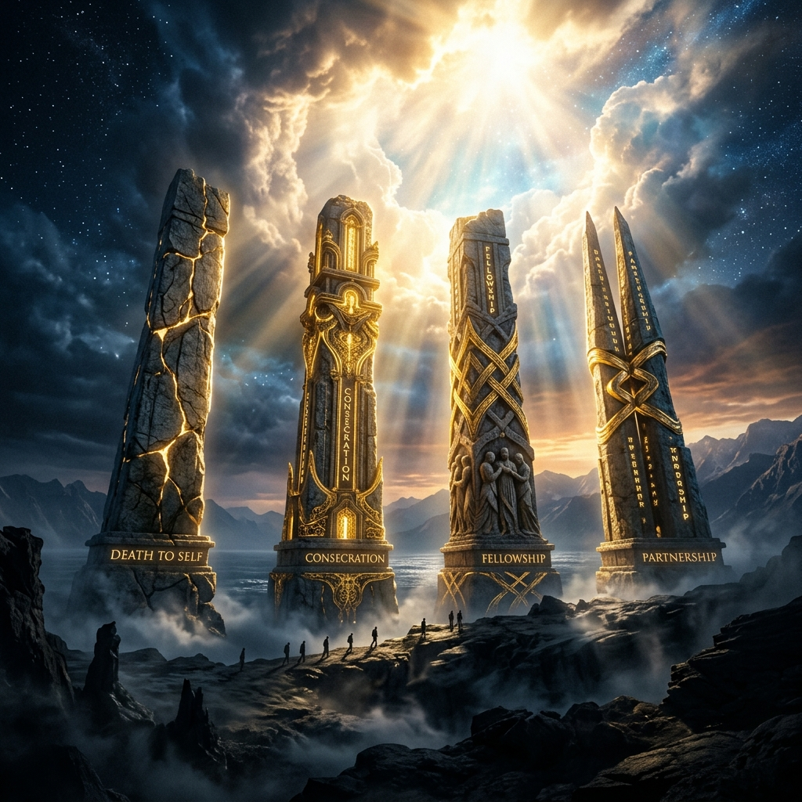

Masterclass Module
THE FOUR PILLARS
The Architecture of a Victorious Life
The gap between the promises of God and the reality you are living is not mysterious—it is structural. Sincere believers remain frustrated because they are missing foundational pillars, or attempting to build them out of order.
🔑 The One-Line Thesis
"Every frustration in the spiritual life can ultimately be traced to a structural deficit. Attempting to build Partnership before submitting to Death to Self ensures immediate public collapse."
🏗️ The Structural Blueprint (SIMULATION)
These four stages are sequential. They cannot be swapped. If you attempt to operate as a partner of God while the "Self" is still very much alive, you do not produce genuine power; you produce a religious person fighting for their own agenda.
SEQUENCE COMPLIANCE PROTOCOL
🗺 The Initial Layers (Mindmap)
Tap the first three foundational architectures below to unpack their specific mechanics.
⛔ Deep Dives: The 6 Destructive Mistakes
These are not hypothetical errors. They are systemic patterns that routinely prevent sincere believers from moving from promise to fulfillment.
1. PASSIVE CHRISTIANITY
Waiting for God to move the mountain while God is waiting for human authorization, spoken decrees, and physical labor to legally intervene. Irresponsible "Amens" do not replace diligence.
2. UNMERITED ENTITLEMENT
Treating grace at salvation as a template for everything else. Sustainable authority and favor are rewards for extreme diligence, not available to those who substitute theology for actual mastery.
3. VISIBILITY WITHOUT DEATH
Acquiring a platform without submitting to the crucifixion of the ego. The gift becomes weaponized for personal projection, turning visibility into a spiritual death sentence with a ticking clock.
4. MISIDENTIFYING ENEMIES
The actual hierarchy of saboteurs: 1. The Self (laziness). 2. Ignorance (lack of principles). 3. Satan/Demons. The enemy is ranked last, yet receives most of the blame.
5. OVER-SPIRITUALIZATION
Attempting to solve physical/economic problems entirely through prayer while ignoring financial literacy and practical skill. God will not subsidize laziness with a miracle.
6. MISUSE OF PROPHECY
Treating prophecy as a fatalistic guarantee. A prophecy is an admission letter to a university; it authorizes you to begin the rigorous study required to graduate, it does not mean you have graduated.
⚡ The Authorization Mechanism (SIMULATION)
Pillar Four: Partnership. The heaven belongs to the Lord, but the earth He has permanently given to men. Every activity on earth is inherently man-dependent.
In Ezekiel 37, the divine power was fully present in the valley. But the bones remained dormant until the man opened his mouth to authorize it in the physical domain.
THE VALLEY PROTOCOL
🪞 The Pillar Audit
Is there something you are calling humility that is actually a survival mechanism—a way of managing the fear of responsibility, or a suppressed need for revenge?
What specific area of your life is God waiting for your practical authorization (your skill, your decision, your decree) to legally intervene in?
In the sequence of the Four Pillars, which exact one has been missing or bypassed? (Death to Self, Consecration, Fellowship, Partnership)
🌐 The Rebuilt Architecture
THE GAP IS CLOSED
"I will not build the roof before the foundation. I submit my ego to crucifixion. I consecrate my vessel. I will dwell in the secret place to host the fire. And I will partner with heaven to legally authorize miraculous change on the earth."